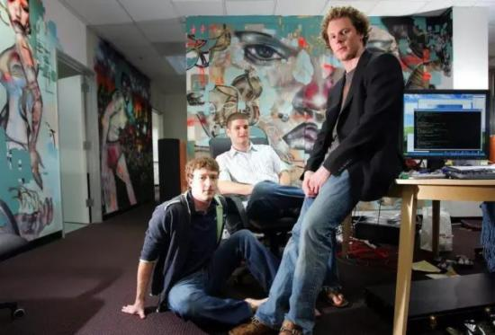

扎克伯格最值得学习的一点就是他持续不断的学习能力。
他从19岁创业做CEO到今天，能够和facebook共同成长，这是一个仍在不断学习、不断进步的年轻人。
从内向害羞到善于公开演讲扎克伯格是个害羞和内向的人，所以在最早的时候扎克伯格在公开讲话时会紧张，身体会轻微颤抖，特别是第一次F8大会，比较明显。
经过这几年的学习和磨炼后，他这方面的表现已经很好了，比如他在这几年的F8开发大会上的演讲，就都很精彩和老道。

每年一项新“挑战”，走出舒适区扎克伯格每年都会给自己制订一项年度“挑战”。他2009年的挑战是每天坚持打领 带（呃，大多数人都知道他平时是一副什么装扮）。2010年是学中文，2011年的挑战是只吃自己亲手屠宰的动物（所以，他几乎成了素食主义者），而 2012年的挑战是坚持每天写代码，因为他希望能与员工变得更亲近，以及从细节处了解Facebook。
线性资本创始人，facebook早期员工王淮Harry在《打造facebook》里面提到，2010年为了学习中文，扎克伯格每周在公司里搞一次小规模的中文讨论会。所以每隔一段时间遇到扎克伯格，就会发现他的中文又进步不少。

有一次扎克伯格讲起和女朋友一起到中国旅游的事情。他们俩到了故宫，买门票时，售票员看到他女朋友是一张华人面孔，就问她“买什么票”“几张”之类的问题，但她一脸茫然，这时扎克伯格开口说中文了。
这让售票员很惊讶。一开始我是不信的，直到听了他的全中文演讲....2015年扎克伯格的年度挑战是每两个星期读一本新书。所以啊，××××多读书。从这些年度挑战上，扎克伯格每次都是不断的走出舒适区，不断学习。
从中二少年到逐渐成熟稳重早年的扎克伯格也是中二的，从最早的名片“Im CEO,Bitch”（傻x，我可是CEO）到后来故意迟到，穿着睡衣去见红杉的投资人，然后列出一个PPT，"不要投资我的十大理由"，把红杉给惹怒了（据说是为他当时的好基友肖恩.帕克复仇，也是意气用事）。

不过出来混，早晚都要还的，后来facebook以190多亿美元天价收购whatsapp，价格这么高，据说红杉抬价作梗是主要原因。YouTube联合创始人陈士骏曾面试过facebook。
陈士骏回忆说面试时扎克伯格简直就是吊儿郎当，“我还记得每次他问问题时，他都没有听我的回答，而是在玩他的手机。我在想，‘天哪，我是不是应该离开了？” 陈士骏感慨道，“这家伙会长大吗？”然而，我们后来也看到扎克伯格的确是成熟了。

比如最近“Facebook新闻偏见门”，扎克伯格迅速回应，陪着笑脸在硅谷总部会见前来兴师问罪的美国17位保守派意见领袖，处理的很好，迅速把这个事
件平息了。（硅谷大佬马克·安德森）当Facebook的董事马克·安德森发表了调侃印度的有关“殖民地”的不当言论时，小扎也迅速与安德森划清了界线，
公开指其观点“非常令人失望，完全不代表Facebook或者我的立场和想法”。
善于寻找老师/导师扎克伯格非常善于组建导师团，从前辈身上汲取管理智慧。他最早的导师是肖恩.帕克，从他身上获得了有价值的经验。

帕克曾告诉扎克伯格保持对公司控制权的重要性。帕克起草了法律文件，确保扎克伯格拥有牢固的控制权。 帕克在Facebook时还帮扎克伯格招聘了大量的早期员工，主导了Facebook最初几轮融资，吸引来了Peter Thiel等知名投资人。

后来他也跟42岁的COO桑德伯格成为管理黄金搭档，其实很多方面桑德伯格是扎克伯格的老师，指导他如何与员工打交道，以及如何建立Facebook的业务。

在Facebook成立初期，扎克伯格曾向乔布斯寻求建议。两人常常在下午一同散步。扎克伯格也从苹果学到了很多，比如仿照苹果的形式每年召开F8大会。 在苹果期间，乔布斯常常在散步时做出招聘决定，后来扎克伯格常常也效仿乔布斯，在散步时做出招聘某些高管的决定。

嗯， 我估计穿衣技巧也是从乔老爷那学习的。比尔·盖茨一直是扎克伯格年轻时的偶像，后来扎克伯格通过投资人认识比尔.盖茨后，他经常在企业管理方面向比尔盖茨 求教。扎克伯格也曾向沃伦·巴菲特咨询Facebook上市建议，股神告诉他，维持对公司的紧密控制是正确的，即使在上市之后也应如此。
后来扎克伯格也向比尔盖茨、巴菲特等人学习如何高效的做慈善。最恐怖的是，他今年才32岁....------------
众所周知，扎克伯格也是VR的全球第一代言人了，扎克伯格喊你学习一下硅谷VR的产业趋势，来参加我们的VR深度考察！
- 推荐图文
- 推荐人物
- 推荐企业